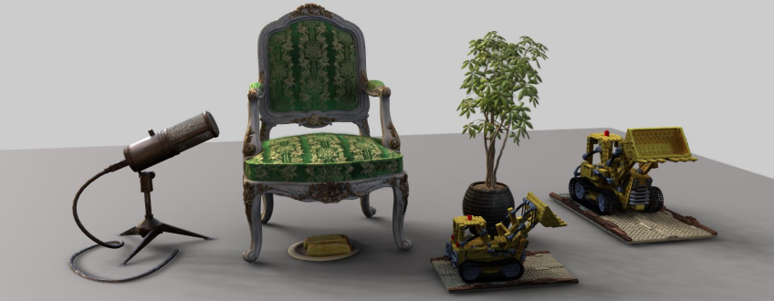
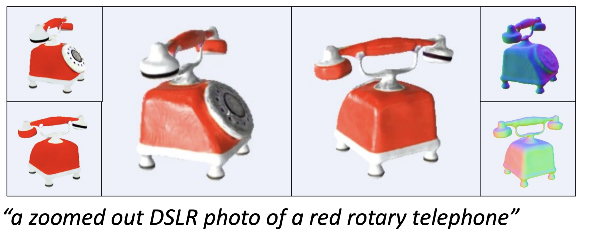

|
Youtian Lin I work on the problem of 4D/3D reconstruction and generation. I am a incoming Ph.D. student of Prof. Yao Yao I previously pursuing Ph.D. at Harbin Institute of Technology. Before that I received my M.S from Harbin Engineering University in 2021, where I was advised by Prof. Jian Guan. Email / Scholar / Twitter (X) / Github |

|
ResearchMy research focuses on combining computer vision and computer graphics technology, specifically 4D/3D reconstruction and generation, neural rendering, and other techniques, to develop real-world applications. I'm also interested in applying deep learning to computer vision and image processing. |

|
Ced-NeRF: A Compact and Efficient Method for Dynamic Neural Radiance Fields
Youtian Lin AAAI, 2024 Project Page We extend the Instant-NGP framework to support dynamic scenes, and show that it can be used to train a dynamic NeRF model that is both more compact and more efficient than prior work. |

|
Gaussian-Flow: 4D Reconstruction with Dynamic 3D Gaussian Particle
Youtian Lin Zuozhuo Dai, Siyu Zhu, Yao Yao Arxiv, 2023 Project Page We propose an innovative point-based method for rapid dynamic scene reconstruction and real-time rendering from both multi-view and monocular videos, leveraging advancements in point-based 3D Gaussian Splatting (3DGS). |

|
Relightable 3D Gaussian: Real-time Point Cloud Relighting with BRDF Decomposition and Ray Tracing
Jian Gao, Chun Gu, Youtian Lin, Hao Zhu, Xun Cao, Yao Yao Arxiv, 2023 Project Page We introduces a novel differentiable point-based rendering framework that utilizes 3D Gaussian points to represent a scene, allowing for material and lighting decomposition, enabling real-time relighting, ray-tracing, and editing of the 3D point cloud with improved BRDF estimation and novel view rendering results. |

|
UniDream: Unifying Diffusion Priors for Relightable Text-to-3D Generation
Zexiang Liu, Yangguang Li, Youtian Lin Xin Yu, Sida Peng, Yuan-Chen Guo, Yan-Pei Cao, Xiaojuan Qi, Xiaoshui Huang, Ding Liang, Wanli Ouyang Arxiv, 2023 Project Page Use a dual-phase training process for albedo-normal aligned multi-view diffusion and reconstruction models, a progressive generation procedure for geometry and albedo-textures using Score Distillation Sample (SDS), and an innovative SDS application for finalizing Physically Based Rendering (PBR) generation with fixed albedo. |

|
EARL: An Elliptical Distribution aided Adaptive Rotation Label Assignment for Oriented Object Detection in Remote Sensing Images
Jian Guan, Mingjie Xie, Youtian Lin, Guangjun He, Pengming Feng IEEE TGRS, 2023 Incorporating adaptive scale sampling, dynamic elliptical distribution aided sampling, and spatial distance weighting to enhance the selection of high-quality positive samples. |

|
TOSO: Student's-T Distribution Aided One-Stage Orientation Target Detection in Remote Sensing Images
Pengming Feng, Youtian Lin, Jian Guan, Guangjun He, Huifeng Shi, Jonathon Chambers ICASSP, 2020 Project Page Utilizing a one-stage keypoint based network architecture and introducing a novel geometric transformation method to achieve orientation angle regression, along with incorporating Student's-t distribution to enhance performance |

|
IENet: Interacting Embranchment One Stage Anchor Free Detector for Orientation Aerial Object Detection
Youtian Lin, Pengming Feng, Jian Guan, Wenwu Wang, Jonathon Chambers Arxiv, 2019 We addressing the challenges of computational complexity in two-stage detectors by employing a per-pixel prediction approach with a geometric transformation, a branch interactive module, and an enhanced intersection over union (IoU) loss. |
Projects |